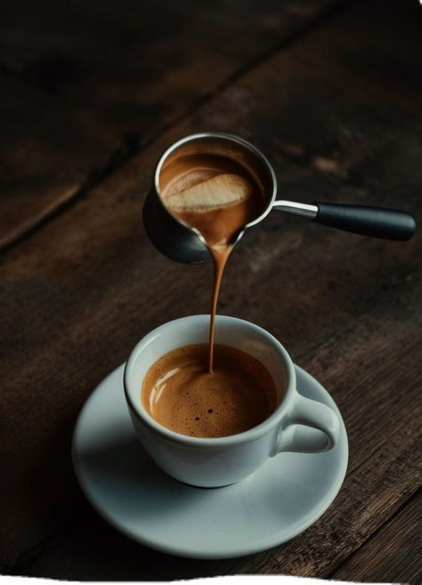
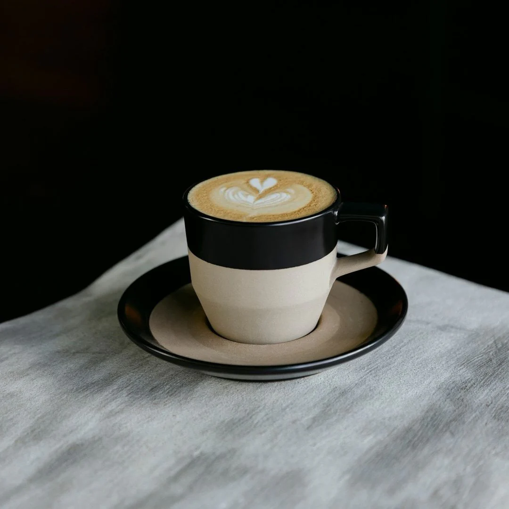

|
 |
E S S P R E S O El espresso (también conocido como short black) es el café puro por excelencia. Se trata de un shot de café concentrado con una capa de crema y es la base de otras bebidas de café como el capuccino, el flat white y el latte. Tip - Para obtener un sabor óptimo, controla la velocidad del flujo del espresso. En general, los molidos más finos hacen que el flujo sea más lento, mientras que los molidos más gruesos lo aceleran. Una buena referencia para empezar es intentar que un shot doble de espresso con 19 g de café molido resulte en 38 g de café líquido y se extraiga en 20 a 30 s. |
|
 |
F L A T - W H I T E
1/3 de espresso |
|
D I R T Y - C H A I
Ingredientes: |